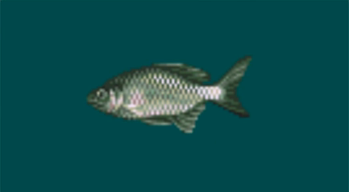

釣り竿
タナゴ竿10本継2m
¥500ID 01
用途
ウキ・アユ釣り用。照準時間が長いほど投げる位置を調整できる。
- HP満タン時の照準時間は同系統11本中11位。1位が最長。
ウキ・アユ用の竿11本中、HP満タン時の照準時間は11位、到達しきい値は11位。1位が最長・最大。
魚ID別の応答
この魚では竿の応答計算が変わる。専用竿や釣りやすさを示すものではない。

タナゴ根拠と調査詳細
説明の根拠: rom_trace
data/rod-response.json
docs/rod-response-research.md
- 釣り方: ウキ・アユ系（ROMコード 1）。
- ゲーム内の日本語名に記載された長さ: 2 m。
- 名前に記載された継数: 10本。
- 投げ・照準の保持時間上限（+2）: 内部カウンター値 10。照準移動・B解放・時間切れに使われる針掛かり前の処理。ファイトの強さではない。
- 届く距離の判定値: 3 × 336内部位置単位（1008）。メートル・秒ではない。
- 魚一致ID: 0x39（タナゴ）。後段の竿サイズ応答を省略するが、先行する変換は残る。
- ファイト応答分岐コード: 0（強さの数値ではない）。
- ROM基本価格欄: 500円。実際の店頭販売状況とは別。
- ファイト・失敗カウンターという旧解釈は撤回。値が高いと照準段階の自動遷移が遅れる。取り込み成功の優位性は未確認。
- HP100時の上限はゲーム内カウンター10。後段の到達しきい値は1008内部位置単位（3 × 336）で、メートルではない。釣果の強さを示す値ではない。
ファイル位置: 0x02A7F5
生バイト列: 01 00 0A 03 39 00 08 00 51 A9 F4 01
解読済みフィールド
- 竿の釣り方コード
- 1
- 投げ・照準の保持時間上限
- 10
- 距離判定係数
- 3
- 距離判定値（内部単位）
- 1008
- 魚ID比較コード
- 57
- ファイト応答分岐
- 0